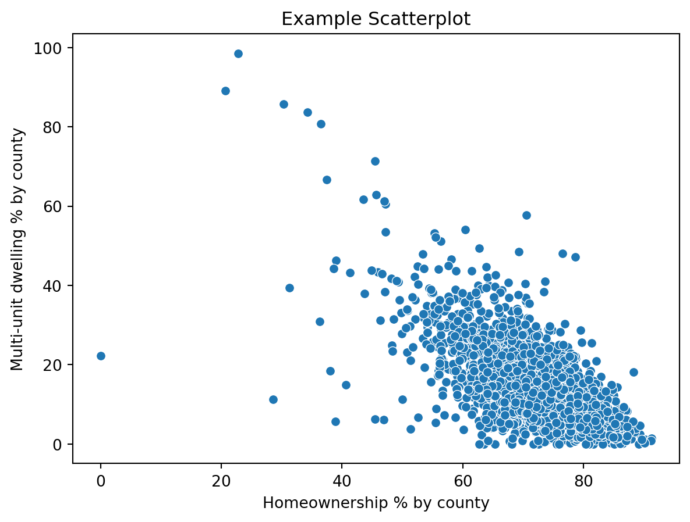
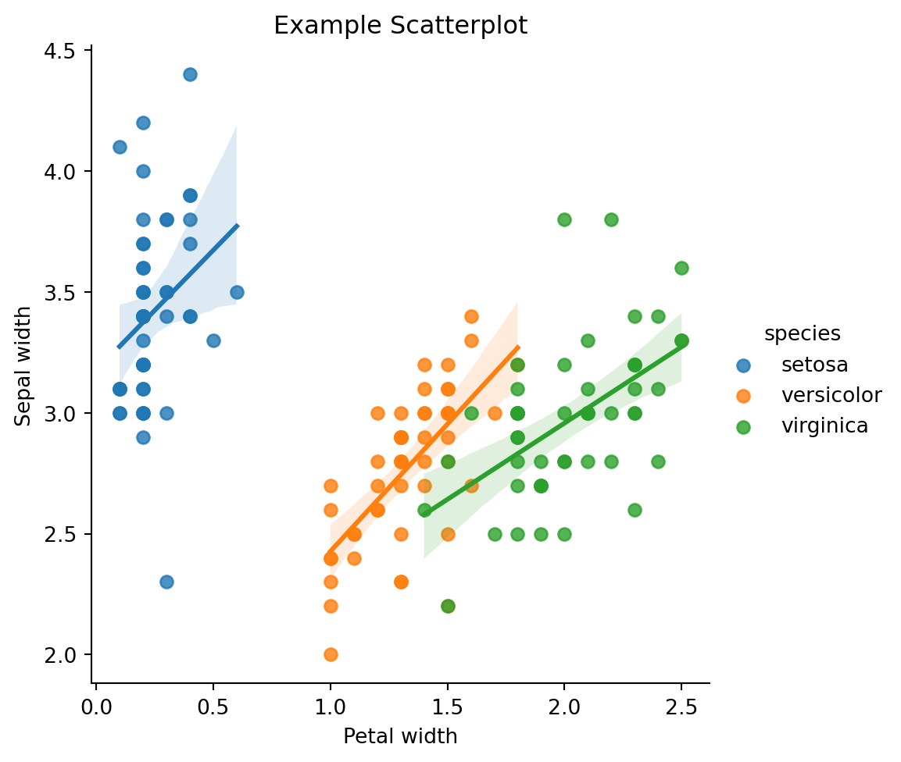
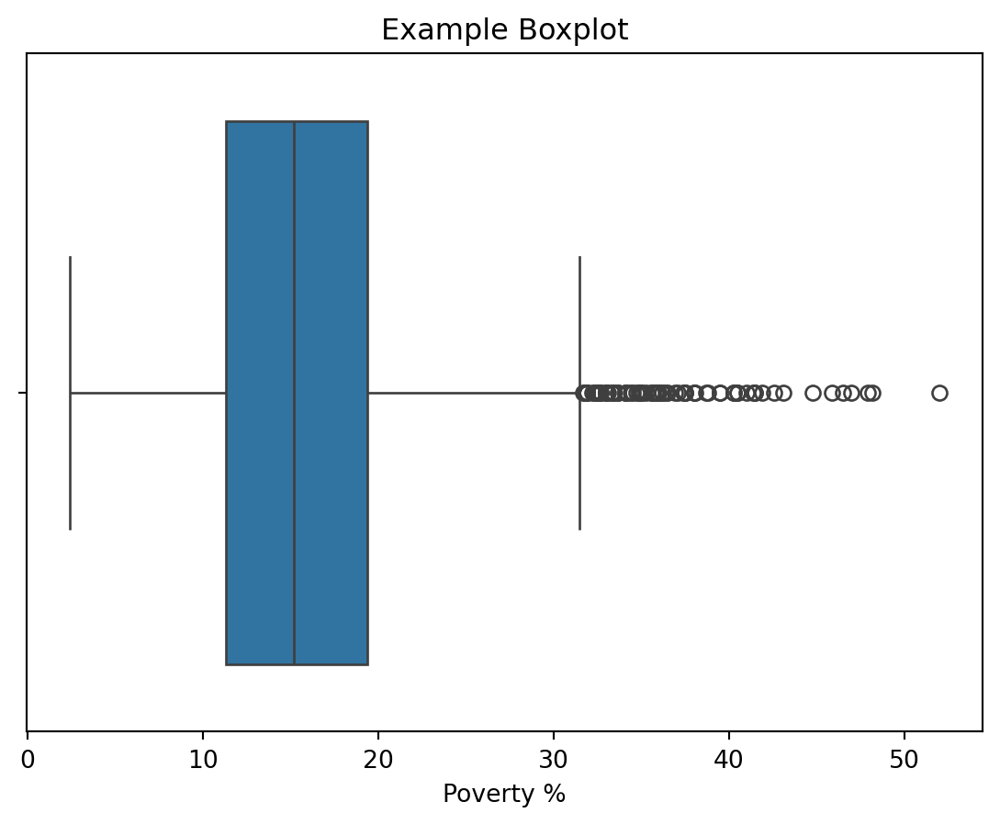
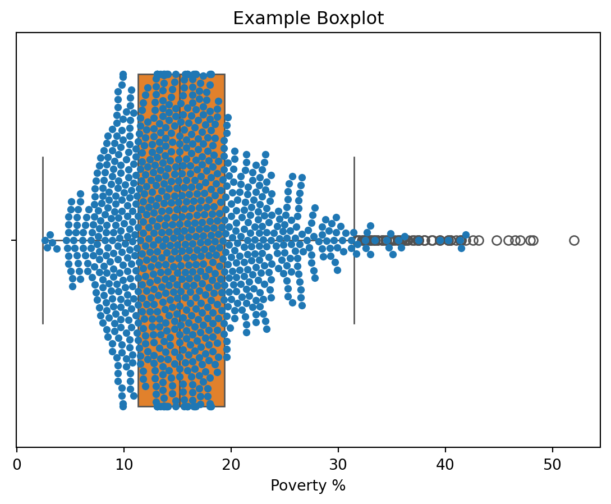
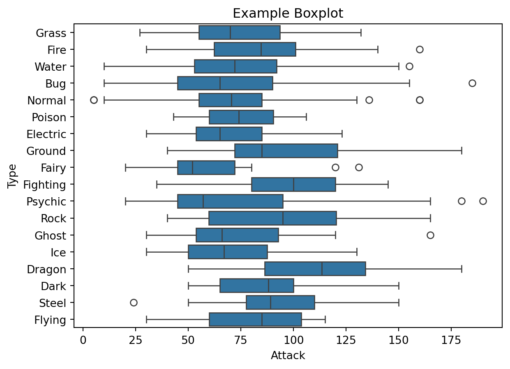
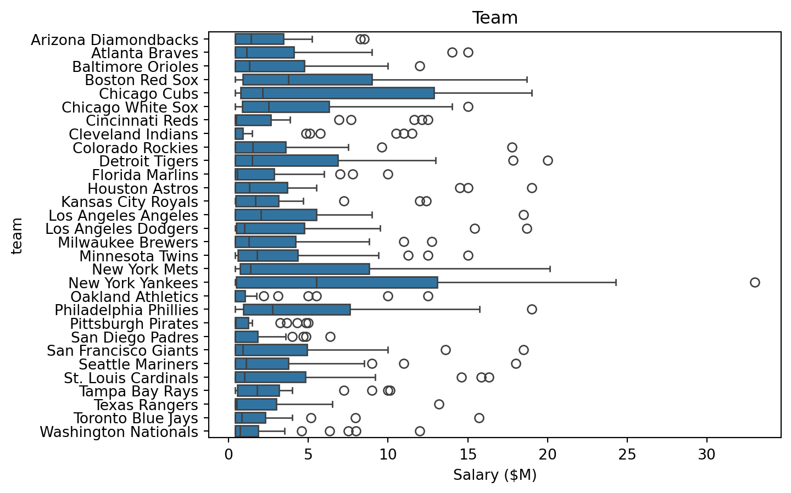

import seaborn as sns
df = pd.read_csv("county.csv")
sns.scatterplot(data=df, x='homeownership', y='multi_unit')08. Dataviz: Boxplot and Scatterplot
Visualizing Distributions of multiple variables using scatterplots or stacked boxplots.
1 Preparation
Read 2.1.1 (scatter plots) and 2.1.5 (box plots)
2 Goals
Read scatter plots and box plots correctly.
Identify when each plot type is appropriate.
Generate your own plots from data using seaborn.
Learn the five number summary and compare to a box plot.
3 Note on Accessibility:
Data visualization is the production of charts and graphs that reveal trends and interrelationships to the eye. Although it can be done well by and for low-vision and colorblind users, dataviz is fundamentally visual, so it’s problematic for the blind. Data methods by and for the blind should strongly consider other techniques. Nevertheless, it’s important for both blind and sighted students of statistics to understand the larger discipline. I’ve tried to make these notes useful to everyone, understanding that a histogram might not be.
4 The Scatter Plot
A scatterplot is a visualization of two quantitative variables, appropriate when at least two numerical values are recorded about each data case. The \(x\) axis is given the range of values of one variable, and the \(y\) axis the other. Then each data case is represented as one point \((x,y)\) according to its variable’s values. A cloud of points arises and its shape is a clue to any association between the variables.
5 The Scatter Plot – Example
import seaborn as sns
import pandas as pd
import matplotlib.pyplot as plt
# Load data
df = pd.read_csv("../openintro.csv/county.csv")
# Create plot with clear labels
sns.scatterplot(data=df, x='homeownership', y='multi_unit')
plt.xlabel(r"Homeownership % by county")
plt.ylabel(r"Multi-unit dwelling % by county")
plt.title(r"Example Scatterplot")
plt.show()
6 The Scatter Plot – interpretation
sns.scatterplot(data=df, x='homeownership', y='multi_unit')- What are typical, common values for homeownership and multi-unit dwelling? Why?
- Where is St. Lawrence County on the scatterplot? Where is Manhattan (“New York County”)?
- What sort of county is represented at the bottom right? What sort of counties are the outliers at the top?
- Is there an upward or downward trend? Speculate why.
import seaborn as sns
import pandas as pd
import matplotlib.pyplot as plt
# Load data
df = pd.read_csv("../openintro.csv/county.csv")
# Create plot with clear labels
sns.scatterplot(data=df, x='homeownership', y='multi_unit')
plt.xlabel(r"Homeownership % by county")
plt.ylabel(r"Multi-unit dwelling % by county")
plt.title(r"Example Scatterplot")
plt.show()
7 Scatterplot – example with hue
sns.lmplot(data=iris, x='petal_width', y='sepal_width', hue = 'species')- Of the three, which species is easiest to identify? How is it recognized?
- What’s the best way to distinguish between the other two species?
- Do flowers with wider petals usually have wider sepals too?
- There are fewer dots on this scatterplot. What does that mean about the flower data?
import seaborn as sns
import pandas as pd
import matplotlib.pyplot as plt
# Load data
iris = pd.read_csv("../csv/iris.csv")
# Create plot with clear labels
sns.lmplot(data=iris, x='petal_width', y='sepal_width', hue = 'species')
plt.xlabel(r"Petal width")
plt.ylabel(r"Sepal width")
plt.title(r"Example Scatterplot")
plt.show()
8 What’s a Box (-and-whisker) Plot?
- A visualization of the distribution of one quantitative variable, an alternative to a histogram.
- reveals the full range of data values along the \(x\)-axis.
- divides the data range into four “equal” parts, called quartiles
- the quartiles usually have unequal width, but
- each quartile’s size is adjusted to include exactly a quarter of the data points.
- the inner two quartiles are drawn as a box, and the outer two are drawn as “whiskers”
- The five quartile boundary points are called: Min, 25%, 50%, 75%, and Max.
9 Box (-and-whisker) plot – Example
sns.boxplot(data=df, x='poverty')- Based on the boxplot, what is a typical homeownership percent for U.S. counties?
- For what x-regions are the data points tightly clustered? Where are they more thinly spread?
import seaborn as sns
import pandas as pd
import matplotlib.pyplot as plt
# Load data
df = pd.read_csv("../openintro.csv/county.csv")
# Create plot with clear labels
sns.boxplot(data=df, x='poverty')
plt.xlabel(r"Poverty %")
plt.title(r"Example Boxplot")
plt.show()
10 Box plot with Swarm plot
sns.swarmplot(data=df, x='poverty')
sns.boxplot(data=df, x='poverty')Many students find the swarmplot/boxplot helpful to understand what the boxplot is doing. Notice that about a quarter of the points lie within each zone.
import seaborn as sns
import pandas as pd
import matplotlib.pyplot as plt
# Load data
df = pd.read_csv("../openintro.csv/county.csv")
# Create plot with clear labels
sns.swarmplot(data=df.sample(1000), x='poverty')
sns.boxplot(data=df, x='poverty')
plt.xlabel(r"Poverty %")
plt.title(r"Example Boxplot")
plt.show()/Users/howaldja/Authoring/.venv/lib/python3.13/site-packages/seaborn/categorical.py:3399: UserWarning: 5.8% of the points cannot be placed; you may want to decrease the size of the markers or use stripplot.
warnings.warn(msg, UserWarning)
/Users/howaldja/Authoring/.venv/lib/python3.13/site-packages/seaborn/categorical.py:3399: UserWarning: 5.4% of the points cannot be placed; you may want to decrease the size of the markers or use stripplot.
warnings.warn(msg, UserWarning)
11 Whisker Technicalities
Customarily, whiskers aren’t allowed to be more 1.5 times as long as boxes. If a boxplot would be drawn with long whiskers, trim them to 1.5 * [box size], and represent data beyond this length as individual dots. Both Python and OpenIntro do this. You need to know this to answer questions like “what’s the maximum data value?” using a boxplot.
12 Box (-and-whisker) plot – Rich Example
Since a boxplot is so narrow, it can be stacked together to compare many related distributions across categories:
sns.boxplot(data=df, x='Attack', y='Type')import seaborn as sns
import pandas as pd
import matplotlib.pyplot as plt
# Load data
df = pd.read_csv("../csv/pokemon.csv")
# Create plot with clear labels
sns.boxplot(data=df, x='Attack', y='Type 1')
plt.xlabel(r"Attack")
plt.ylabel(r"Type")
plt.title(r"Example Boxplot")
plt.show()
13 The Box Plot – more serious example
sns.boxplot(data = df, x = 'salary', y = 'team')- The plots seem left-justified. What does that mean about salaries?
- Which teams pay the least? the most?
- What do the circles mean?
- Which team pays the highest median wage?
- Professor Howald is considering quitting math and playing major league ball. What’s a realistic salary expectation?
import seaborn as sns
import pandas as pd
import matplotlib.pyplot as plt
# Load data
df = pd.read_csv("../openintro.csv/mlb.csv")
df.salary = df.salary / 1000
# Create plot with clear labels
sns.boxplot(data = df, x = 'salary', y = 'team')
plt.xlabel(r"Salary ($M)")
plt.title(r"Team")
plt.show()
14 Plotting yourself
Once a dataframe is loaded, it’s not hard to make a scatterplot or boxplot:
import pandas as pd #Needed once, not for every plot
import seaborn as sns #Needed once, not for every plot
df = pd.read_csv("filename.csv")
sns.boxplot(data=df, x='Attack', y='Type')
sns.scatterplot(data=df, x='homeownership', y='multi_unit')See examples illustrated on previous slides.
15 Summary: Which plot type is best for each case?
- To illustrate how time spent studying relates to course grade.
- To show any relationship between religious identity and GPA.
- To illustrate a link between height and weight.
- To show the distribution of molecule sizes in a polymer.
- To illustrate total sales by product type.
- To visualize the masses and temperatures of thousands of stars.
- To show whether pokemon with higher attack also have higher defense.
16 Putting it all together
Load the OpenIntro Run17 data. Make your own plots to answer each question.
- What genders are represented and how many of each?
- How are the run times distributed?
- Are the run times unimodal? Bimodal? Something else? Why!?
- Can you compare run time distribution…
- by event?
- by gender?
- by both?
- How are age and run time related?
- Can you compare by gender? By event?
17 Individual work
On Webwork, called “Dataviz Box and Scatter.”